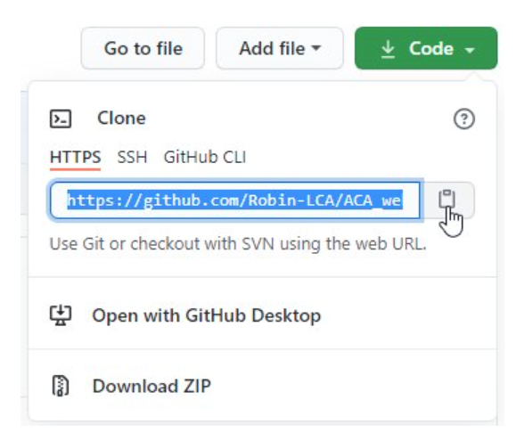
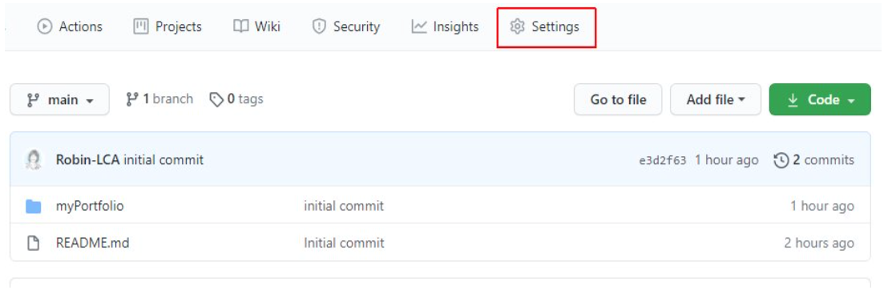
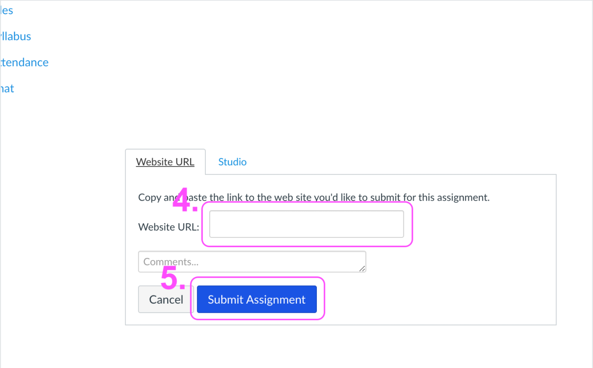

Submitting Coding Homework
Create Your Development Folder
For sanity and organization sake, you'll need a designated folder to keep all your coding projects together on your computer. This isn't a special folder just one that will be dedicated to keeping up with coding project.
- Open your terminal program and navigate to Documents:
cd Documents - Make a new folder named
devFolder:mkdir devFolder - Change into the new folder/directory you made in the last class:
cd devFolder
NOTE FOR WINDOWS MACHINES USING ONEDRIVE: If you use OneDrive to save your photos, music, and other files, you may run into problems using Git and GitHub to create and manage your repos. If you have any issues, please refer to How to Configure OneDrive to Sync Only Certain Folders in Windows 10 to unsync your
devFolder.
You will only need to create one folder for all of your coding projects to go into for the entirety of the program. When you graduate and get a job you will want to create a new folder to organize that work in.
Create a Repo for Each Assignment
- Open your web browser and sign in to your GitHub account.
- Click the New button in the top-right corner of the window.

- Enter
ACA_web101_yourFirstName_yourLastNamein the Repository name field.
NOTE: Change
firstNamefor your actual first name andlastNamefor your actual last name.
- Enter
This is my ACA portfolioin the Description field. - Leave the Public radio button selected.
- Check the Add a README file checkbox. (this will create a
README.mdfile for you to take notes in.) - Click the Create repository button.

- Once the repo is created, click the Code button and copy the link it provides in the drop-down menu by clicking on the icon that looks like a page with the arrow pointing left.

- Go back to your terminal.
- Type
git cloneand paste the link you copied from your repo on GitHub to clone the repo onto your computer:git clone paste-that-link-here-and-replace-me - Press the Enter key and watch it work!

You will need to create a repo for most assignments and every time you want to start a new project on your own, for a friend or whenever you want to build something new. Keep this instructions handy as they will be the same in the future.
Move Your Project Files
For the first assignment, you've already been working in a folder that is NOT a Git repo. And, you have a new repo with nothing but a README file in it.
To continue, you need to move the files of myPortfolio folder into your ACA_web101_yourname folder so Git can move your project to GitHub.
- Navigate to your finder/file explorer on your computer and open two separate windows.
- Navigate to your ACA_web101_yourname folder in the first window.
- Navigate to your myPortfolio folder in the other window.
- Drag the files of myPortfolio folder into the ACA_web101_yourname folder in the first window.
There is a way to turn a folder on your computer into a git repo using git init but that's an abstract lesson for where we are in your learning journey now. In the future, we will walk you through that method but for now, just copy/paste or drag and drop the files into the newly cloned folder/repo.
Push to GitHub
You've created a new repo, cloned it to your local machine, and moved your myPortfolio folder with your project files into the new repo. Now it's time to push your files to GitHub.
-
Open your terminal, and
cd(change directory) to yourACA_web101_yournamefolder: -
Example:
cd ACA_web101_yourname
TIP: Type the first few letters of the folder and press Tab, and the terminal will fill in the rest of the folder name.
- You will see the full directory path with (
main) or (master) at the end. This confirms you are in a Git repo and on themain/masterbranch.

- Type
git status+ Enter. You will see yourmyPortfoliofolder (or a list of files) that have been changed in red.

- Type
git add -A+ Enter to add/track all files to what will be committed.
You won't get a message back.
- Type
git status+ Enter again and you will see the files you just staged to commit now in green.

- Type
git commit -m "moved files into repo"+ Enter to commit your changes (the files you just moved over) so they're ready(staged) to be sent to GitHub.
You will see a summary of changes about to be pushed in white.

the
commitcommand takes an argument-mfor "message" followed by some plain text inside" ". This is for you to write a detailed message about the code changes you've made so your team can easily reference & understand the updates.
- Type
git push+ Enter to push your files to GitHub. You will see the a success messages in white.

-
IF you get a DENIED error you may need to redo your Git Configurations with the proper email/username and password
-
IF you get a fatal message:
1 2 | |
simply copy/paste the command it gives you:
git push --set-upstream origin <example-branch>
- See Git & Terminal Commands for a full list of commands.
NOTE: All over the web and in this ebook when you see
<yourName>or<example-branch>this means you should type in the name of your file or folder WITHOUT the wrapping<and>.
You will do this step over, and over and OVER throughout the rest of your career. So write it down now, ask questions, understand what's happening and remember, git status, git add, git commit, and git push. Over and over and over again.
Host Your Webpage
Before you can view your web page in a browser and turn in your assignment, you need to set your repository as a GitHub page. This tells GitHub you want to display this repo to the web.
- Go to your GitHub account and open your ACA_web101_yourname repo.
- Click the Settings icon in the top navigation menu.

- Scroll down almost to the bottom of the page to the GitHub Pages section.
- Click the Source dropdown and select the
mainormasterbranch (the first option).

- Click the Save button. The page will automatically refresh.
- Scroll back down to the GitHub Pages section, and you will see a message and link that says Your site is published at https://yourusername.github.io/ACA_web101_yourname.".
Click the link. This is the Root of your live site.

- Always test your site to make sure everything is working. You can make and push changes as many times as you need.
- Bookmark this link so you can find it throughout the course. This will be the link you turn in for your assignments.
You will only use GitHub pages when you want to host a page to the world. Most of our assignments won't require you to do this but it's a darn handy tool for when you want to get something up on the cheap.
Turn in Your Assignment
Follow these steps when you're ready to submit your assignment:
- Step 1. Click "Assignments" on the left hand nav

- Step 2. Click on the name of assignment you're submitting

- Step 3. Click "Submit Assignment"
- Step 4. Enter the URL for the website you're submitting
- Step 5. Click "Submit Assignment"

- And that's it! You can re-submit if for whatever reason you need to turn in a different URL.